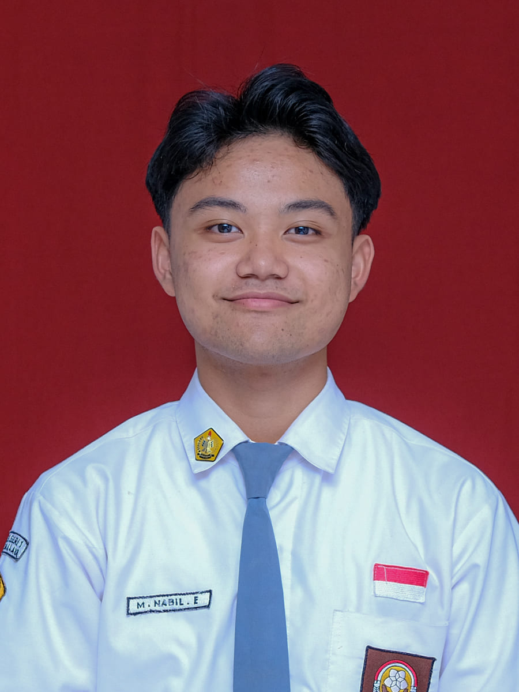
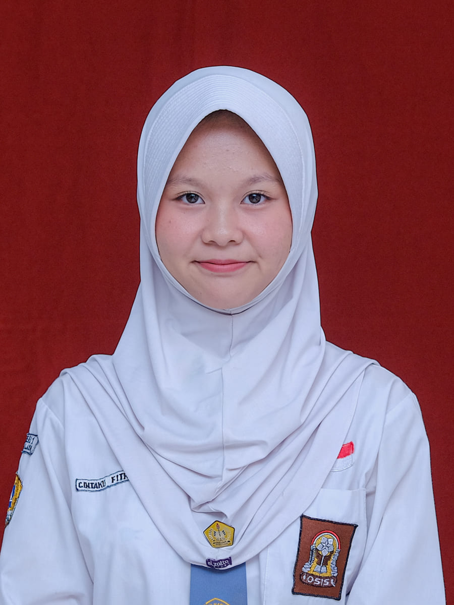
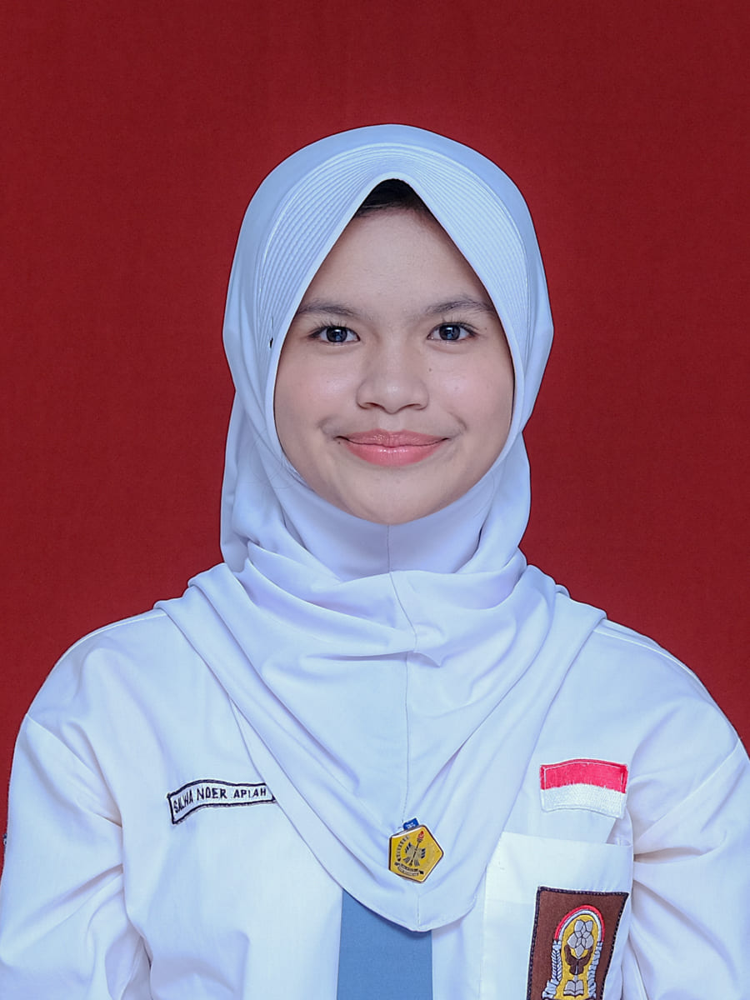
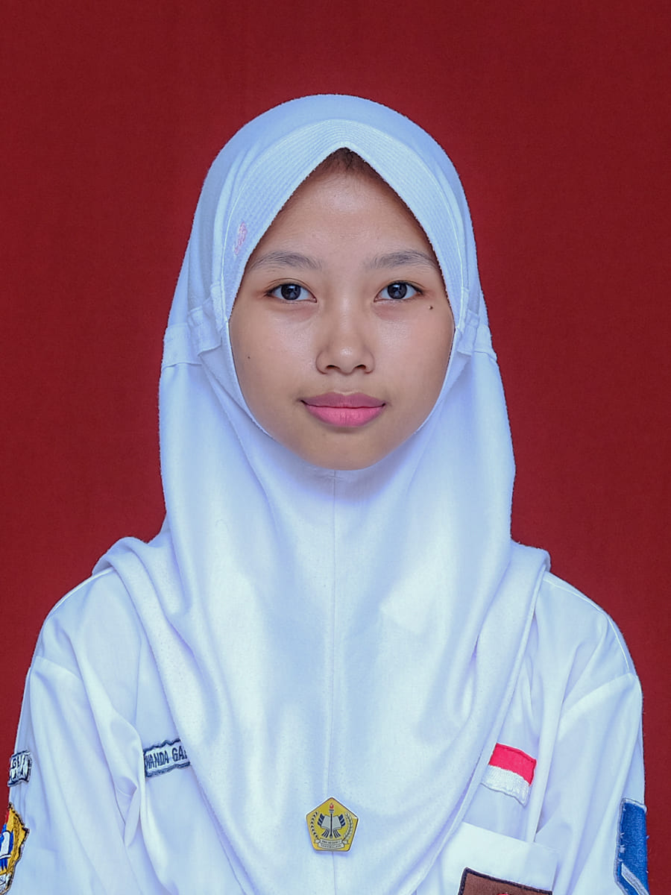
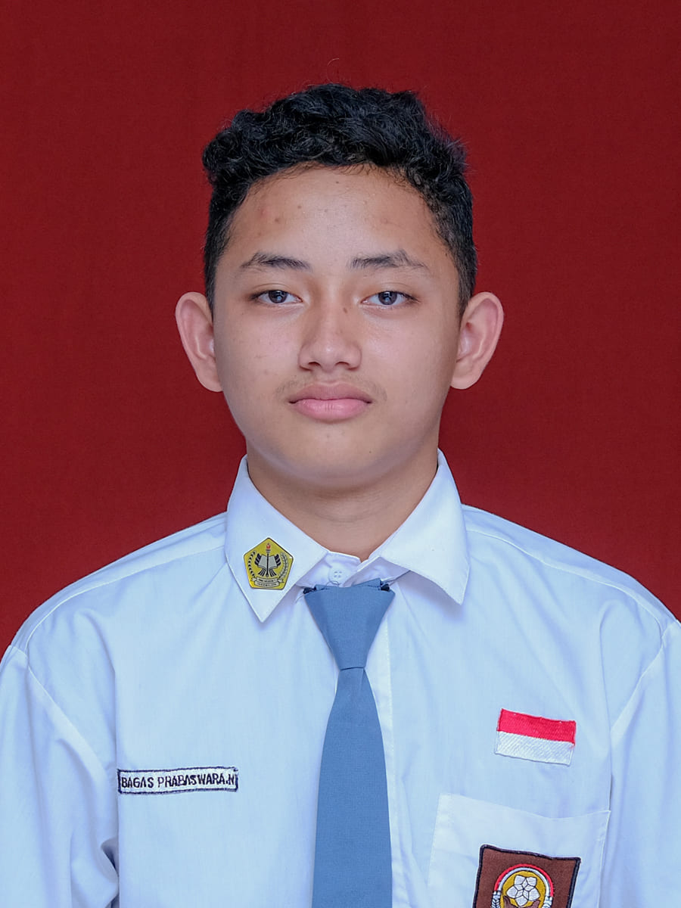

KELOMPOK 1 | XI-4 | SMAN 1 TASIKMALAYA

Perkenalkan, saya Muhammad Nabil Efendi, siswa kelas XI-4 SMAN 1 Tasikmalaya, yang lahir di Ciamis pada 11 April 2010. Dalam project ini, saya berperan sebagai ketua Kelompok 1 sekaligus salah satu pengembang utama website yang kami buat. Bagi saya, website ini bukan sekadar tugas sekolah yang selesai lalu ditinggalkan. Saya ingin mengembangkan website ini dengan serius, terkonsep, dan memiliki kualitas yang layak untuk dipublikasikan. Mulai dari ide, desain, hingga proses coding, saya ingin setiap bagian dari website ini memiliki tujuan dan identitasnya sendiri. We don't just build it, we make it worth publishing. Saya menempuh pendidikan di SDN 2 Cibeureum, kemudian melanjutkan ke SMPN 5 Tasikmalaya, dan sekarang bersekolah di SMAN 1 Tasikmalaya. Saya memiliki ketertarikan yang cukup besar terhadap dunia TIK dan teknologi, terutama dalam hal editing, pembuatan film, desain, produksi musik, dan tentunya coding. Saya suka mencoba hal-hal baru dan mengubah sebuah ide menjadi sesuatu yang bisa benar-benar dibuat dan digunakan. Di luar dunia teknologi dan kreativitas, saya juga memiliki hobi bermain basket dan badminton. Bagi saya, proses belajar dan berkarya adalah tentang terus mencoba, melakukan kesalahan, memperbaiki, lalu berkembang. Create something, learn something, and keep improving.

Perkenalkan, saya Cintaku Fitri Anisya Al Basry, siswi kelas XI-4 SMAN 1 Tasikmalaya, lahir di Tasikmalaya pada 19 September 2009. Dalam project pembuatan website kalkulator anuitas ini, saya bersama rekan-rekan Kelompok 1 berkontribusi dalam mengembangkan website ini, dengan fokus saya pada aspek visual dan kenyamanan tampilan. Saya menempuh pendidikan di SDN Mangkubumi, kemudian melanjutkan pendidikan ke SMP Al-Muttaqin Tasikmalaya, dan saat ini tengah menempuh pendidikan di SMAN 1 Tasikmalaya. Saya memiliki ketertarikan yang mendalam terhadap dunia kesenian, khususnya dalam bidang menggambar, melukis, mewarnai, mengsketsa, menari, serta mendengarkan musik. Bagi saya, anuitas memiliki kesamaan dengan proses berkarya seni. Keduanya memerlukan ketelitian, kesabaran, dan konsistensi agar dapat membentuk suatu pola yang teratur dan menghasilkan sebuah karya yang utuh. Melalui project ini, saya memahami bahwa perhitungan yang terkesan rumit dapat disajikan dengan cara yang lebih indah dan mudah dipahami, apabila dikemas dengan ketulusan dan kesungguhan dalam berkarya. Website ini merupakan wujud penerapan dari ketertarikan saya tersebut, di mana perhitungan yang bersifat sistematis dihadirkan melalui tampilan yang lembut, tertata, dan nyaman untuk digunakan. Where numbers meet art, there is beauty in every pattern.

Perkenalkan, saya Salwa Noer Apiah, siswi kelas XI-4 SMAN 1 Tasikmalaya, yang lahir di Tasikmalaya pada 17 Juli 2010. Dalam project pembuatan website kalkulator anuitas ini, saya berperan sebagai anggota kelompok yang ikut ambil bagian dalam setiap prosesnya bersama teman-teman tim. Saya menempuh pendidikan di SDN Galunggung, kemudian melanjutkan ke SMPN 1 Tasikmalaya, dan sekarang bersekolah di SMAN 1 Tasikmalaya. Saya memiliki ketertarikan untuk terus belajar dan mencoba hal baru, senang berkolaborasi, dan menikmati proses kerja tim yang kompak. Di luar kegiatan sekolah, saya memiliki hobi bermain badminton dan memasak, serta rutin melakukan jogging setiap hari Sabtu. Bagi saya, proses belajar dan berkarya adalah tentang saling mendukung, terus mencoba, melakukan kesalahan, memperbaiki, lalu berkembang bersama. Create something, learn something, and keep improving. Bagi kami, website kalkulator anuitas ini adalah hasil kerja sama dan kontribusi bersama sebagai satu tim, bukan hanya tugas individu. Kami ingin mengembangkan project ini dengan serius, terkonsep, dan saling mendukung mulai dari pembagian tugas, penyusunan materi, hingga website ini selesai dengan baik. Setiap anggota kelompok memiliki peran dan andil penting dalam mewujudkan project ini.

Perkenalkan, saya Wanda Gandawati Zakiah, siswi kelas XI-4 SMAN 1 Tasikmalaya, yang lahir di Banjar pada 4 November 2009. Dalam project pembuatan website kalkulator anuitas ini, saya berperan sebagai anggota kelompok yang ikut ambil bagian dan berkontribusi penuh dalam setiap prosesnya bersama teman-teman tim. Saya menempuh pendidikan di SDN Sukamenak Indah, kemudian melanjutkan ke SMPN 2 Tasikmalaya, dan sekarang bersekolah di SMAN 1 Tasikmalaya. Saya memiliki ketertarikan yang besar dalam mengeksplorasi hal-hal kreatif, senang berkolaborasi, serta menikmati setiap proses kerja tim yang solid dan saling mendukung. Di luar kegiatan sekolah, saya memiliki hobi memasak, membuat kue, berenang, dan melukis. Bagi saya, proses belajar dan berkarya adalah tentang terus mencoba, menuangkan kreativitas, melakukan kesalahan, memperbaiki, lalu berkembang bersama. Create something, learn something, and keep improving. Bagi kami, website kalkulator anuitas ini adalah hasil kerja sama dan kontribusi bersama sebagai satu tim, bukan hanya tugas individu. Kami ingin mengembangkan project ini dengan serius, terkonsep, dan saling mendukung mulai dari penyusunan materi, pembagian tugas, hingga website ini selesai dengan baik. Setiap anggota kelompok memiliki peran dan andil penting dalam mewujudkan project ini.

Perkenalkan, saya bagas prabaswara nugraha , siswa kelas XI-4 SMAN 1 Tasikmalaya, yang lahir di tasikmalaya pada 25 April 2010. Dalam project ini, saya berperan sebagai angota Kelompok 1 pengembang ikut ambil bagian dalam proses membuat web site kalkulator anuitas. di luar kegiatan sekolah, saya memiliki hobi megutak gatik mesin kendaraan dan tenis setiap libur saya juga suka berjalan jalan atau main ke sirkuit bagi saya belajar dan berkaria adalah mendukung terus mencoba dan tidak takut akan ke gagalan memperbaiki dan berkembanb bersama karna apapun itu kita harus belajar Saya menempuh pendidikan di SDN 1 manonjaya , kemudian melanjutkan ke SMPN 1 Tasikmalaya, dan sekarang bersekolah di SMAN 1 Tasikmalaya. Saya memiliki ketertarikan yang cukup besar terhadap dunia TIK dan teknologi, terutama dalam hal editing, pembuatan film, desain, produksi musik, dan tentunya coding. Saya suka mencoba hal-hal baru dan mengubah sebuah ide menjadi sesuatu yang bisa benar-benar dibuat dan digunakan. Di luar dunia teknologi dan kreativitas, saya juga memiliki hobi bermain basket dan badminton. Bagi saya, proses belajar dan berkarya adalah tentang terus mencoba, melakukan kesalahan, memperbaiki, lalu berkembang. Create something, learn something, and keep improving.